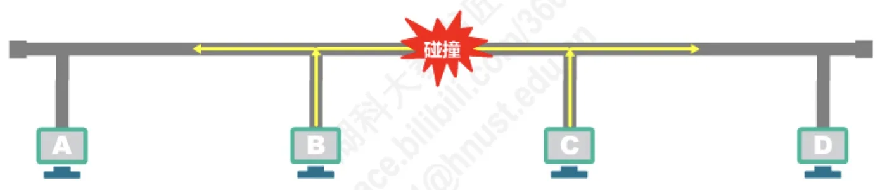
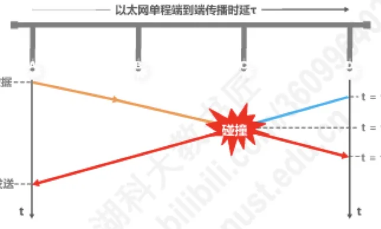
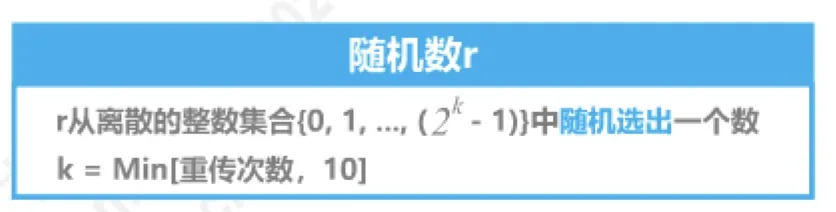
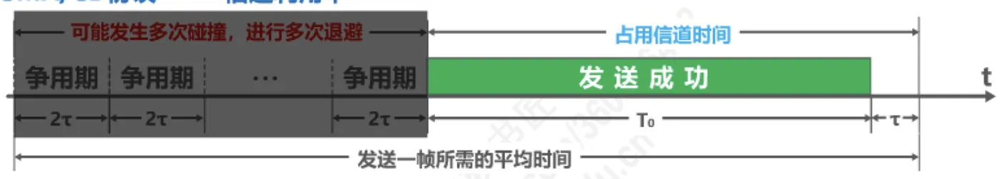
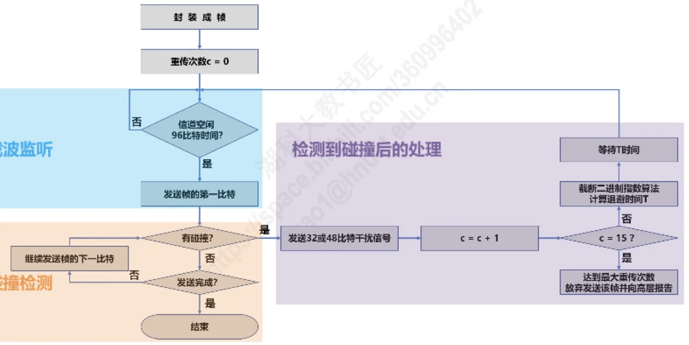
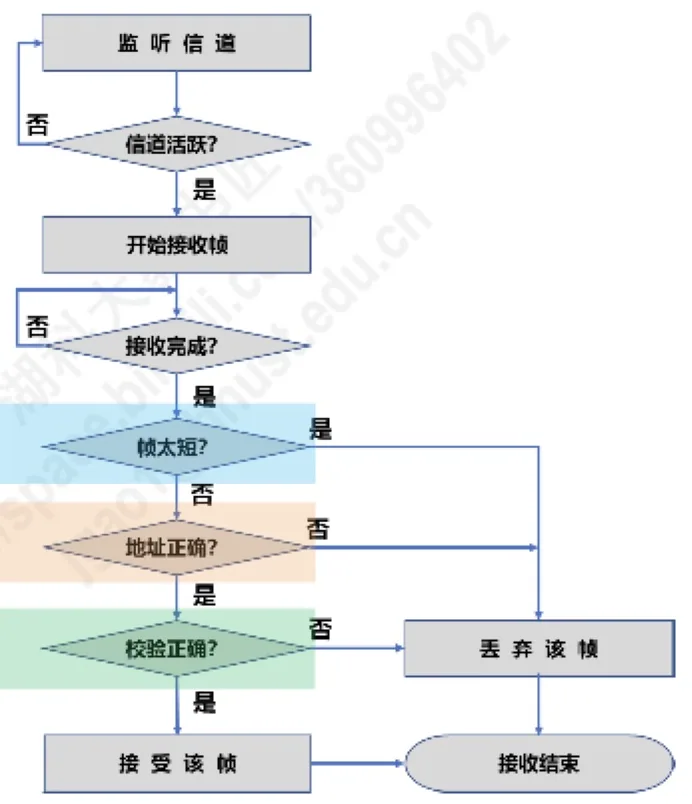
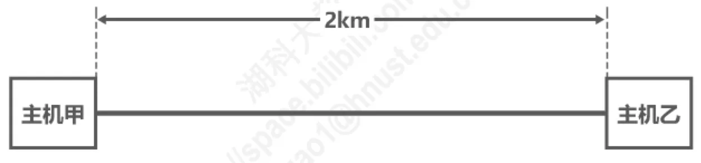

计算机通信与网络 · 第 3 章 数据链路层
3.6.3 媒体接入控制 —— 动态接入控制 —— 随机接入 —— CSMA/CD
上一节讲的静态划分信道把资源预先切给各用户，灵活性和信道利用率都受限。本节进入动态接入控制中最重要的一类——随机接入，讲共享式以太网使用的协议：载波监听多址接入/碰撞检测 CSMA/CD。要抓住三条线索：三个要素（MA、CS、CD）、围绕碰撞展开的两个数字（争用期与最小帧长）、以及碰撞之后的退避算法。
1. CSMA/CD 协议与它的三个要素
载波监听多址接入/碰撞检测 CSMA/CD（Carrier Sense Multiple Access/Collision Detection）是共享式以太网采用的随机接入协议，它的名字本身就包含了三个要素：
- 多址接入 MA（Multiple Access）：多个站连接在一条总线上，竞争使用总线；
- 载波监听 CS（Carrier Sense）：每一个站在发送帧之前先要检测一下总线上是否有其他站点在发送帧，即「先听后说」；
- 碰撞检测 CD（Collision Detection）：每一个正在发送帧的站边发送边检测碰撞，即「边说边听」。
把三者的操作连起来，就是四句话的口诀：先听后说，边听边说；一旦冲突，立即停说；等待时机，重新再说。
2. 碰撞是怎样发生的
单条总线上同一时刻只允许一个站发送，否则信号就会叠加而互相破坏。碰撞有两种典型情形：
- 总线本身空闲，主机 B 和主机 C 同时发送数据，则传输信号发生碰撞（或称冲突）；
- 主机 B 正在占用总线传输数据，主机 C 也要发送数据，则传输信号发生碰撞。
第一种情形说明「同时监听、同时判空、同时发送」是可能的——因为监听到空闲到真正发出信号之间存在传播时延；第二种情形说明「先听后说」并不能完全避免碰撞——主机 C 听到的信道状态可能已经过时了。

3. 载波监听 CS 与碰撞检测 CD 的具体做法
（1）载波监听 CS——先听后说
每一个站在发送帧之前先要检测一下总线上是否有其他站点在发送帧，具体规则是：
- 若检测到总线空闲 96 比特时间，则发送这个帧；
- 若检测到总线忙，则继续检测并等待总线转为空闲 96 比特时间，然后发送这个帧。
「96 比特时间」是指发送 96 个比特所需要的时间。规定一段空闲时间的意义在于：帧与帧之间必须留出间隔，让信号在总线上传播开、让各站的收发器都恢复到稳定状态，否则前一个帧的尾部残留会被误认为是新的载波。
（2）碰撞检测 CD——边说边听
每一个正在发送帧的站边发送边检测碰撞，一旦发现总线上出现碰撞，则立即停止发送，退避一段随机时间后再次发送。也就是说：「一旦冲突，立即停说，等待时机，重新再说」。
（3）强化碰撞
以太网还采取一种叫做强化碰撞的措施：当发送帧的站点一旦检测到碰撞，除了立即停止发送帧之外，还要再继续发送 32 比特或 48 比特的人为干扰信号（Jamming Signal），以便有足够多的碰撞信号使所有站点都能检测出碰撞。如果没有这个措施，离碰撞点近的站可能已经停止发送，离得远的站还在发，碰撞信号会很快消失而检测不到。
4. 争用期（碰撞窗口）
「先听后说、边说边听」听起来很可靠，但有一个时间上的漏洞：一个站刚发出去的数据还没有到达最远的那个站，那个站就检测到信道空闲并开始发送，碰撞已经注定发生，而前一个站此刻还蒙在鼓里。要把这个漏洞堵住，就必须弄清「发了多久以后才能确认不会碰撞」。
设以太网单程端到端传播时延为 τ。考察两个相距最远的主机 A 和 D：
- t = 0 时，A 检测到信道空闲，开始发送数据；
- t = τ − δ 时，D 检测到信道空闲（此时 A 的信号还差一点才到 D），也开始发送数据；
- t = τ − δ/2 时，两者的信号相遇，发生碰撞；
- t = τ 时，D 检测到碰撞，停止发送；
- t = 2τ − δ 时，碰撞信号传回 A，A 检测到碰撞，停止发送。
于是得到两条重要结论：
- 主机最多经过 2τ（即 δ → 0）的时长就可以检测到本次发送是否遭受了碰撞。因此，以太网的端到端往返传播时延 2τ 称为争用期或碰撞窗口；
- 经过争用期这段时间还没有检测到碰撞，才能肯定这次发送不会发生碰撞。
换句话说，每一个主机在自己发送帧之后的一小段时间内，都存在着遭遇碰撞的可能性，这一小段时间是不确定的——它取决于另一个发送帧的主机到本主机的距离，但不会超过总线的端到端往返传播时延，即一个争用期。显然，在以太网中发送帧的主机越多、端到端往返传播时延越大，发生碰撞的概率就越大。因此共享式以太网不能连接太多主机，使用的总线也不能太长。
举一个具体的数字：10 Mb/s 以太网把争用期定为 512 比特发送时间，即 51.2 μs。据此推算，总线长度不能超过 5120 m；但考虑到其他一些因素（如信号衰减等），以太网规定总线长度不能超过 2500 m。

5. 最小帧长
争用期还带来一个直接后果：帧不能太短。设想主机 A 给主机 D 发送帧，边发送边检测碰撞。如果帧很短，A 有可能在碰撞信号传回来之前就发送完毕了。发送完毕之后 A 就不再针对该帧检测碰撞，也就不知道刚才发出的这一帧遭遇了碰撞，自然不会重发该帧；而接收方那边只会收到一个有差错的帧并把它丢弃。结果这一帧就永久丢失了，而 CSMA/CD 的机制完全失效。因此，以太网的帧长不能太短。
以太网的具体规定是：
- 最小帧长为 64 字节，即 512 比特——512 比特时间恰好就是一个争用期；
- 如果要发送的数据非常少，那么必须加入一些填充字节，使帧长不小于 64 字节；
- 以太网的最小帧长确保了主机可在帧发送完成之前就检测到该帧的发送过程中是否遭遇了碰撞；
- 如果在争用期（共发送 64 字节）内没有检测到碰撞，那么后续发送数据就一定不会发生碰撞；
- 如果在争用期内检测到碰撞，就立即中止发送，这时已经发送出去的数据一定小于 64 字节。因此，凡长度小于 64 字节的帧都是由于碰撞而异常中止的无效帧。
把最小帧长的关系写成式子就是：最小帧长 = 争用期 × 信道带宽（数据发送速率）。对 10 Mb/s 的传统以太网，争用期为 51.2 μs，因此最小帧长为 512 bit，即 64 字节。这个式子也说明了最小帧长为什么与网络跨距和数据传输速率都有关系：跨距越大，争用期越长，最小帧长就要越大。
6. 最大帧长
帧不能太短，也不能太长。如果某个站发送一个很长的帧，总线就会被它长时间占用，其他有帧要发的站点只能干等（「总线怎么还是忙啊」），而接收方的缓冲区也可能被撑满。因此，为了防止主机长时间占用总线，以太网的帧也不能太长：
- 以太网 V2 的 MAC 帧最大长度为 1518 字节，即 1500 字节数据载荷加 18 字节首尾字段；
- 插入 VLAN 标记后的 802.1Q 帧最大长度为 1522 字节，即 1500 字节数据载荷加 22 字节首尾字段。
7. 截断二进制指数退避算法
检测到碰撞、停止发送之后，站点不能立刻重发——否则两个碰撞的站点会再次同时发送、再次碰撞。正确做法是各自退避一段随机时间。以太网采用的算法叫截断二进制指数退避算法，规则如下：
- 退避时间 = 争用期 2τ × 随机数 r，其中 r 从离散整数集合 {0, 1, …, （2k − 1）}中随机取出一个；
- 集合参数取 k = Min[重传次数, 10]，即参数随重传次数增长，但到 10 就截断封顶。
按这个规则，随着重传次数的增加，可能的退避时间集合不断扩大：
- 第 1 次重传：k = Min[1, 10] = 1，随机数 r 从集合 {0, 1} 中取，可能的退避时间是 0 × 2τ、1 × 2τ；
- 第 2 次重传：k = 2，r 从集合 {0, 1, 2, 3} 中取，可能的退避时间是 0 × 2τ、1 × 2τ、2 × 2τ、3 × 2τ；
- 第 10 次及以后的重传：k 取到上界 10 不再增加，r 从集合 {0, 1, 2, 3, 4, 5, …, 1023} 中取，可能的退避时间从 0 × 2τ 一直到 1023 × 2τ。
若连续多次发生碰撞，就表明可能有较多的主机参与竞争信道。使用上述退避算法可以使重传需要推迟的平均时间随重传次数而增大（这也称为动态退避），因而减小发生碰撞的概率，有利于整个系统的稳定。而当重传达 16 次仍不能成功时，表明同时打算发送帧的主机太多，以至于连续发生碰撞，则丢弃该帧，并向高层报告。

8. 信道利用率
考虑一种理想情况：各主机发送帧都不会产生碰撞；总线一旦空闲就有某个主机立即发送帧。此时发送一帧占用总线的时间为 T0 + τ，而帧本身的发送时间是 T0，于是得到极限信道利用率：
Smax = T0 / (T0 + τ) = 1 / (1 + a)，其中 a = τ / T0。
由这个式子可以推出两条提高信道利用率的途径：参数 a 的值要尽量小。而 a = τ/T0 说明——以太网端到端的距离受到限制（τ 要小），以太网帧的长度应尽量长些（T0 要大）。这也正好解释了第 4 节的总线长度限制和第 6 节的最大帧长规定。

9. 帧的发送流程与接收流程
把前面各条规则串起来，就得到 CSMA/CD 的帧发送流程图：有帧要发送时，先封装成帧并把重传次数 c 置 0；载波监听，若信道空闲 96 比特时间则发送帧的第一比特，否则继续监听；边发送边做碰撞检测——没有碰撞就继续发送下一比特直到发送完成；一旦检测到碰撞，就发送 32 或 48 比特干扰信号，把重传次数加 1，用截断二进制指数退避算法算出退避时间 T 并等待 T 时间后重新尝试；当重传次数达到 16 次仍不成功，就放弃发送该帧并向高层报告。

接收方的流程则是：监听信道，信道活跃时开始接收帧；接收完成后要依次做三项检查——帧太短？（小于最短帧长则认为遭遇了碰撞）、地址正确？（帧的目的 MAC 地址与接收方 MAC 地址相同，或是广播地址）、校验正确？（使用 CRC 检查帧是否出现了误码）。三项都通过就接受该帧，否则丢弃该帧，随后接收结束。

10. 用几道考题检验
（1）关于 CSMA/CD 的叙述
2015 年的一道真题问：下列关于 CSMA/CD 协议的叙述中，错误的是哪一个？四个选项依次是 A「边发送数据帧，边检测是否发生冲突」、B「适用于无线网络，以实现无线链路共享」、C「需要根据网络跨距和数据传输速率限定最小帧长」、D「当信号传播延迟趋近于 0 时，信道利用率趋近 100%」。
判断如下：选项「边发送数据帧，边检测是否发生冲突」描述的是碰撞检测，正确；选项「适用于无线网络，以实现无线链路共享」错误，因为 CSMA/CD 协议不适用于无线网络——无线网络要使用 CSMA/CA 协议（见下一节）；选项「需要根据网络跨距和数据传输速率限定最小帧长」正确，因为「网络跨距」相当于给出了端到端传播时延 τ，进而可得出争用期 2τ，再乘以数据传输速率即为最小帧长；选项「当信号传播延迟趋近于 0 时，信道利用率趋近 100%」也正确，从极限信道利用率 Smax = T0/(T0 + τ) 可以直接看出，τ 趋近于 0 时它趋近于 100%。答案：B。
（2）最小帧长与最远站点距离
2009 年的一道真题：在一个采用 CSMA/CD 协议的网络中，传输介质是一根完整的电缆，传输速率为 1 Gb/s，电缆中的信号传播速度是 200 000 km/s。若最小数据帧长度减少 800 比特，则最远的两个站点之间距离至少需要怎样变化？
解析：设最远两个站点之间的距离为 d（m），最小帧长为 l（bit）。由「最小帧长 = 争用期 × 数据传输速率」得 l = (2d / v) × C，即 l = (2d / 2×108 m/s) × 109 b/s，整理得 l = 10 × d，反过来 d = l / 10。显然，若最小帧长减少 800 bit，最远的两个站点之间的距离至少会减少 80 m，对应选项 D。
（3）冲突的最短与最长检测时间
2010 年的一道真题：某局域网采用 CSMA/CD 协议，数据传输速率为 10 Mbps，主机甲和主机乙之间距离为 2 km，信号传播速度是 200 000 km/s。若主机甲和主机乙发送数据时发生冲突，则从开始发送数据时刻起，到两台主机均检测到冲突时刻止，最短需经过多长时间？最长需经过多长时间？

- 最短：两主机同时发送数据，信号在距离中点处相遇碰撞，碰撞信号再传回两端。这段时间包括主机发送的数据信号传播到距离中点处所耗费的传播时延，以及发生碰撞后碰撞信号传播回主机所耗费的时间（与之前的传播时延相等），即两主机间单程的传播时延：2 km ÷ 200 000 km/s = 0.01 ms；
- 最长：甲发送的帧信号传播到无限接近乙的某个时刻，乙也要发送帧，它检测到信道空闲（但信道此时并不空闲），于是立刻开始发送帧，这必然导致碰撞。此时乙会首先检测到碰撞，一段时间后甲也会检测到碰撞。从开始发送数据时刻起，到两台主机均检测到碰撞时刻止，最长需要经过的时间就是两台主机间信号传播的往返时延（即一个争用期）：(2 km ÷ 200 000 km/s) × 2 = 0.02 ms。
本节小结
- CSMA/CD 的三个要素：多址接入 MA（多站竞争一条总线）、载波监听 CS（先听后说，信道空闲 96 比特时间才发送）、碰撞检测 CD（边说边听，一旦冲突立即停止发送并退避重发）；口诀是「先听后说，边听边说；一旦冲突，立即停说；等待时机，重新再说」；
- 检测到碰撞后还要继续发送 32 或 48 比特的人为干扰信号（强化碰撞），让所有站点都能检测到碰撞；
- 争用期（碰撞窗口）：以太网端到端往返传播时延 2τ，主机最多经过 2τ 就能检测出本次发送是否遭遇碰撞；经过争用期未检测到碰撞才可肯定本次发送不会碰撞。10 Mb/s 以太网的争用期为 512 比特时间即 51.2 μs，因此总线长度受限（规定不超过 2500 m）；
- 最小帧长 = 争用期 × 信道带宽，以太网规定为 64 字节（512 比特），不足的要填充；小于 64 字节的帧一定是碰撞而异常中止的无效帧。最大帧长方面，以太网 V2 的 MAC 帧为 1518 字节，插入 VLAN 标记的 802.1Q 帧为 1522 字节；
- 截断二进制指数退避算法：退避时间 = 争用期 2τ × 随机数 r，r 取自 {0, 1, …, 2k − 1}，k = Min[重传次数, 10]；重传达 16 次仍不成功则丢弃该帧并向高层报告；
- 极限信道利用率 Smax = T0/(T0 + τ) = 1/(1 + a)（a = τ/T0），因此端到端距离要受限制、帧长应尽量长些；
- CSMA/CD 曾经用于各种总线结构的以太网和双绞线以太网的早期版本中；而现在的以太网基于交换机和全双工连接，不会有碰撞，因此没有必要使用 CSMA/CD 协议——但无线局域网仍然需要一套类似的机制，那就是下一节的 CSMA/CA。